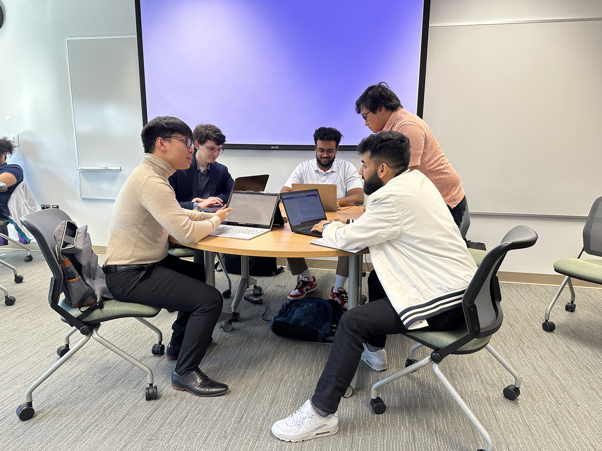

Characteristics of a Good Senior Design Project:
Capstone Projects follow business requirements that meet an actual need outlined by sponsors. There will be significant time and effort allocated in analyzing existing business processes to justify case for cases changes that demonstrate the viability of information technology to solve a real-world problem.
Senior Information Technology students will demonstrate the breadth and depth of their knowledge, skills, and abilities in good projects that have the following characteristics.
- Viable Real-world Application
- Applicable Information Technology Concentration (Cybersecurity, Software Development, Data Analysis)
- Room for Innovation
- Technical Complexity the degree program
- Clear high-level Requirements
- Can be developed and delivered in one semester


Timeframe
The Capstone covers two semesters, roughly 36 weeks to complete. Student teams will manage the level of effort and hours needed to complete their sponsor projects. The project schedule, as part of the project plan, is created by the student teams to track deliverables and project milestones to be completed.
The measurement to successful project delivery and completion is dependent on the number of hours pooled into the tasks contributing to overall project progress. The projected number of hours per semester is calculated below:
IT 492 — 9-10 hours a week for the 3-credit IT 492 class each semester
IT 493 — 12-16 hours a week for the IT 493 4-credit semester.
Team Composition:
Students will be organized in teams based on their concentrations, strengths, and skillsets. Teams can consist of about 5-7 members at best although it could vary at the instructor’s discretion. Among the members, roles and responsibilities will be assigned and each team member is expected to fulfill these responsibilities as part of their equal contribution to team.
IT 492 Student Team Roles:
- Team Lead
- Business Analyst
- Sponsor Point of Contact
- Project Scheduler
IT 493 Student Team Roles:
- Team Lead
- Quality Assurance (QA) Analyst
- Software Developer
- Cybersecurity Technician
- Web Developer
- Business Analyst